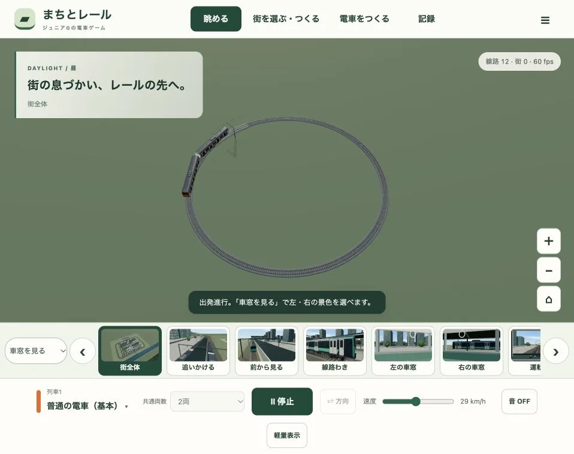

線路をつなぐ鉄道ゲーム
直線やカーブを組み合わせ、一周して戻ってくる線路を自分で作れます。

線路の端から延ばす
「街を選ぶ・つくる」の「つくる・編集」から空の土地を選びます。線路を置き、水色で示された端を選んで次の直線やカーブをつなぎます。上から見ると端の向きが分かりやすくなります。
最後の二つの端をつなぐ
輪の最後にすき間が残ったら「端どうしをつなぐ」を選び、開いた端を順に指定します。線路をつなげたら、電車を走らせて一周できるか確かめましょう。踏切のそばに道路を置くと、街の様子も変わります。
ゲームで試す →